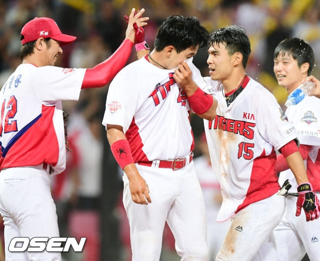

또한 2020년까지 최고의 명문구단이 되자는 TEAM 2020이라는 계획을 선언했는데 당시 팬들은 비웃었지만 실제로 현대-KIA 자동차그룹에서 엄청난 지원을 해주고 있다느 사실이 알려지며
재평가 받기도 했다. 나유리 기자의 말에 따르면 모기업 지원이 엄청나서
현장에서 부담을 느낄 정도라고. 실제로 2015년에 1,2군 경기장에만 110억을 투자했으며, 기아 챌린저스 필드에 최첨단 재활센터도
건설했으며, 야간 경기가 가능한 신축 2군 경기장을 신설할 계획까지 가지고 있다. 그리고 16시즌 종료 이후 FA에서
팬들의 우려와는 달리 프런트가 최형우를 영입하고 양현종과 나지완을 잔류시키는데
성공하면서 2015년까지 조용했던건 이 FA를 위함이었다는 프런트의 큰그림이라면서 팬들의 찬양을 받고 있는 중이다. 이 FA로 인해 선동렬 시절 한화보다도 답이 없었던 팀이
드디어 팀 구실을 하게
되었다는 평이 많으며, 불펜진이 그렇게 좋진 않아서 우승은 힘들겠지만, 적어도 3~4위권에는 들거라는 예상이 많은 편이다. 그렇게 시작한 2017 시즌, 선발투수들의 연이은 호투와 조용하다가도 결정적일때
점수를 내는 응집력있는 타선, 탄탄한 수비가
더해지며 전반기를 1위로 마감했다. 이후 고질적 불펜불안에 선발진 붕괴로 위기를 맞지만 1위 자리는 놓치지 않았고 10월 3일 마지막 정규시즌 경기를 승리로
페넌트레이스 1위를 확정짓고 KS로 직행했다. 그리고 구단의 전폭적인 지원 아래 한국시리즈에서 우승했다.